internal comms design system
building a more scalable way to design and deliver internal communications
I developed a design system for Disney’s internal event communications using reusable components and layouts that adapt to different content and branding. I worked closely with production to align the component structure between design and implementation.
impact overview
17 components
Built for common communication needs
800+ annual emails
Scale the system is designed to support
~40% faster
Estimated reduction in build and review time
the opportunity
Disney Corporate Creative Resources (DCCR) supports internal events across the company, including leadership meetings and global employee programs. Each event can require multiple digital touchpoints, such as invitations, registration, reminders, and follow-up communications.
As the volume and complexity of events grew, similar designs were being recreated. Even small changes could require another round of design, production, and review.
I saw an opportunity to reduce repeated work by creating a consistent foundation for these communications.
CFO Town Hall
Finance Leadership
Global Security
Cybersecurity
Learning &
Talent Solutions
Shareholders Meeting
Risk Management
Corporate Excess
Legal University
Global Belonging
understanding the patterns
I started by reviewing existing registration experiences to understand where repeated design work was happening.
I mapped recurring components and compared how they varied based on event requirements. I consulted the communications and development teams to understand which variations were necessary.
This helped distinguish what could be standardized from what needed to remain flexible.
building the system
I used these findings to create a modular Figma template.
Research into atomic design helped define how components could combine into modules, sections, and templates. I also reviewed industry design systems to understand how similar libraries were structured.
I structured our system into four levels:
template -> section -> module -> component
For example, Date and Time components combine into a Date & Time module within an Event Details section.
I standardized layout, spacing, typography, and behavior, then used properties and modes to manage variations within each component.
Template: Confirmation
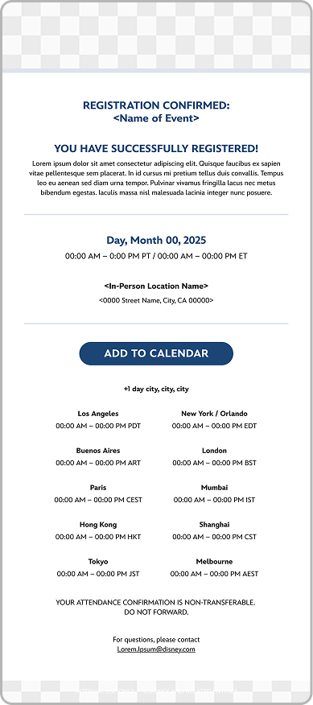
Section: Event Details
(Organism)
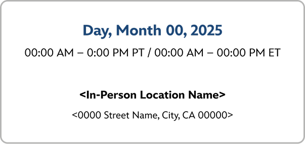
Module: Date & Time
(Molecule)
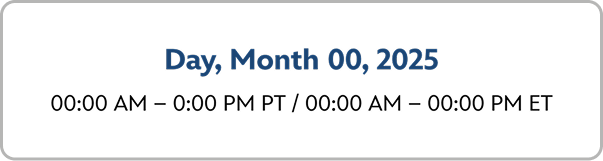
Component: Date
(Atom)
Component: Time
(Atom)
Component: Viewing Option In-person
(Atom)
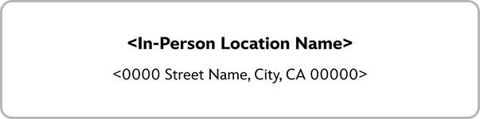
aligning with production
The Figma components also needed to match how they were built in production.
I worked with production to align each Figma component with its coded version in Litmus. We established consistent naming and matched the structure, variants, and behavior across both platforms.
This created a one-to-one mapping between Figma and Litmus, reducing translation between design and production.
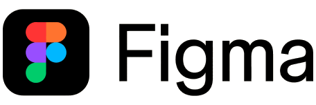
- EDS_Event_DateTime
- EDS_Event_Date
- EDS_Button_RSVP
- EDS_Button_Replay
- EDS_Headline_WithText
- EDS_Timezone_DateWithDayOffset
- EDS_Headshots_SubHeadline_Center
- EDS_Headshots_SubHeadline_Left
- EDS_Footer_Invitation
- and more+
documenting the system
I documented the system in a live prototype that design and production could use as a shared reference.
Each component includes guidance on when to use it, how to adjust its properties and modes, and examples from previous communications.
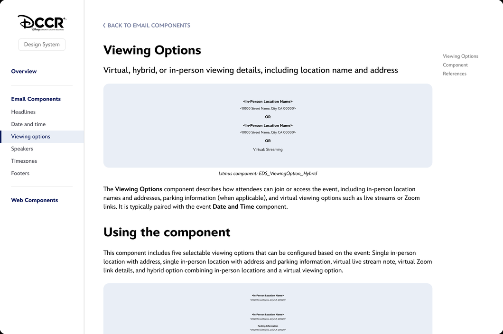
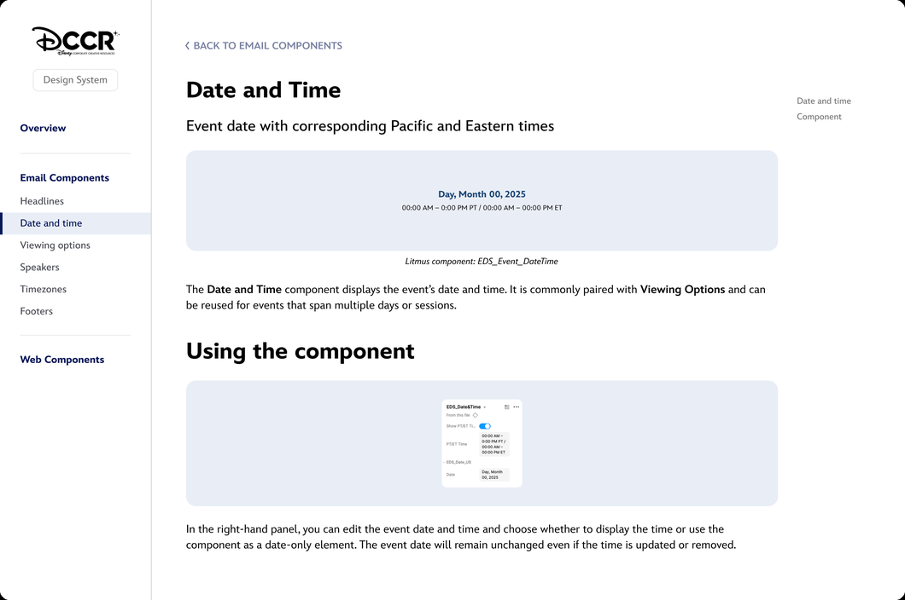
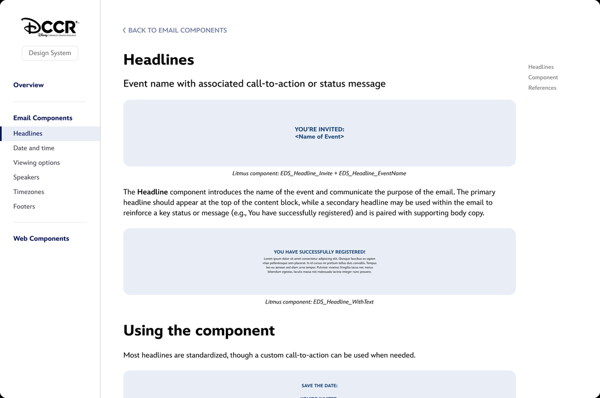
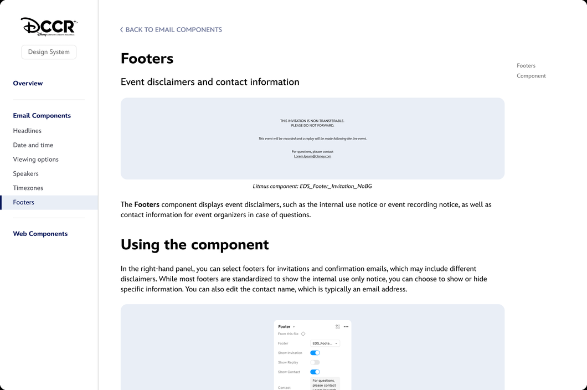
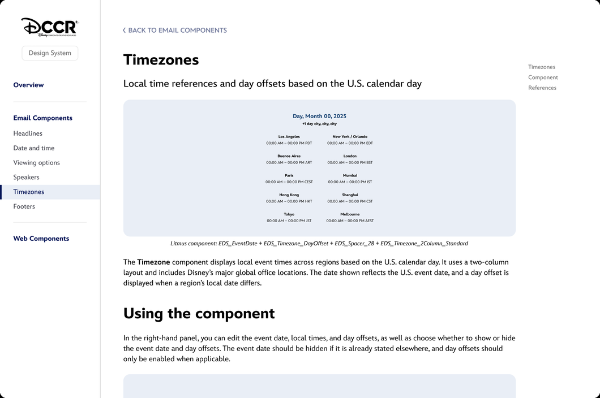
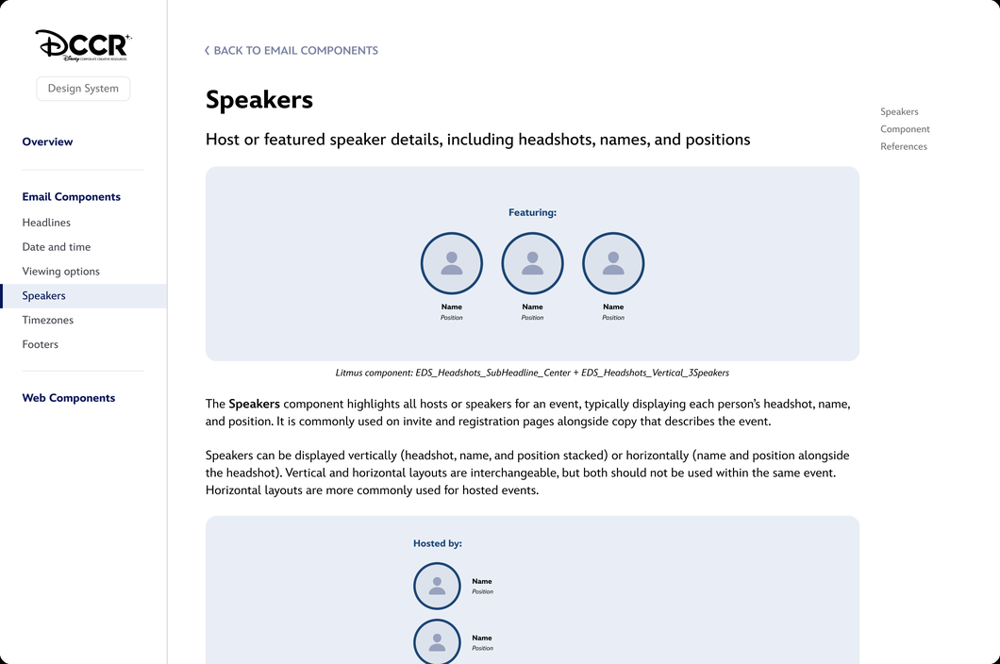
the outcome
The team deploys more than 800 emails each year, with most future builds expected to use the system. By starting with existing components and reducing revisions between design and production, build and review time is estimated to decrease by approximately 40%.
next steps
The next phase will bring the system to Disney’s internal web platform, with components adapted to work across responsive layouts.